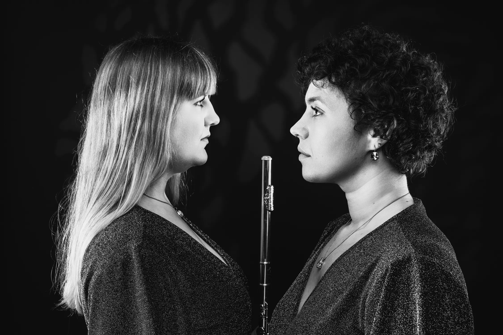
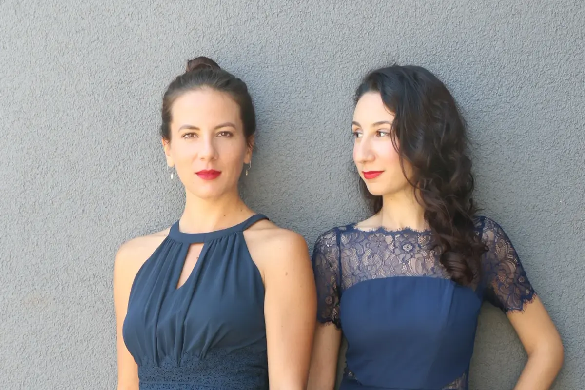
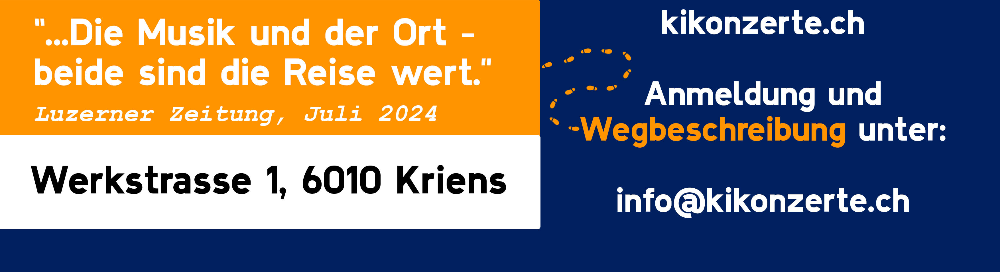

Magd & Knecht
So, 27.09.26, 17:00
Das Duo Magd & Knecht erkundet mit der ungewöhnlichen Kombination ihrer Instrumente neue musikalische Welten und verknüpft mit viel Leichtigkeit Neues mit Altbekanntem.

Lauter Luisen
So, 25.10.26, 17:00
Im Programm "Katertage" wird überraschendes literarisches Material vertont - moderne Lyrik von Kurt Marti, Hilde Domin und Rose Ausländer sowie spielerische Anagramme von Schweizer Autor*innen.

Duo Giannoni-Suflyan
So, 29.11.26, 17:00
Das Duo lässt die Musik von zahlreichen Komponistinnen erklingen: Ein Dialog über Zeit und Raum hinweg – eine Feier der weiblichen Stimme, die sich ihren Platz in der Welt komponiert.

